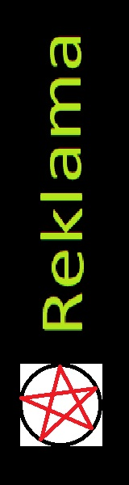

Polska Strona o Prawach w Internecie |
||
|
Prawa Autorskie
Licencja na oprogramowanie Netykieta |
Licencja na oprogramowanieLicencja oprogramowania – umowa na korzystanie z utworu, jakim jest aplikacja komputerowa, zawierana pomiędzy podmiotem, któremu przysługują majątkowe prawa autorskie do utworu, a osobą, która zamierza z danej aplikacji korzystać.Umowa taka powinna określać przede wszystkim pola eksploatacji (formy wykorzystania utworu), czyli warunki, na jakich licencjobiorca jest uprawniony do korzystania z programu. W Polsce ustawa o prawie autorskim i prawach pokrewnych jako podstawowe elementy określające pola eksploatacji wskazuje zakres, miejsce i czas korzystania z utworu, przy czym jest to wyliczenie przykładowe i strony umowy mogą dowolnie kształtować charakter licencji (biorąc jednak pod uwagę treść przepisów ustawowych, których strony nie mogą modyfikować – tzw. ius cogens). Materiały wzięte z wikipedi |
 |
Strona zrobiona przez Nikox and Anna © Wszelkie prawa zastrzeżone |
||